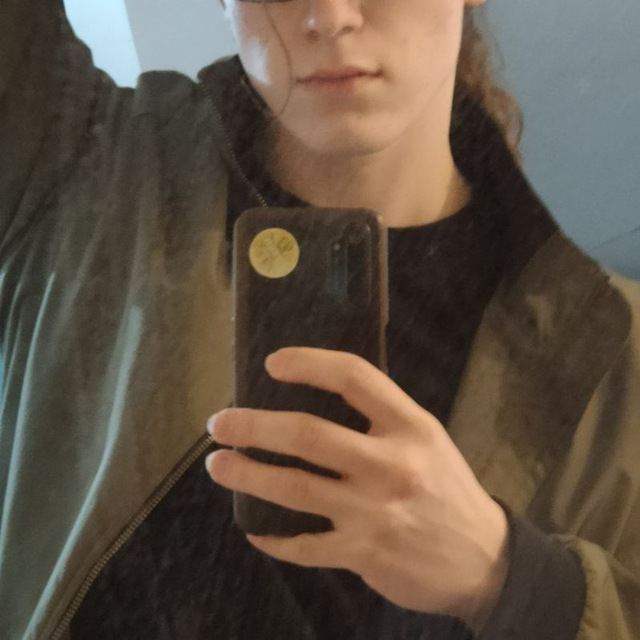
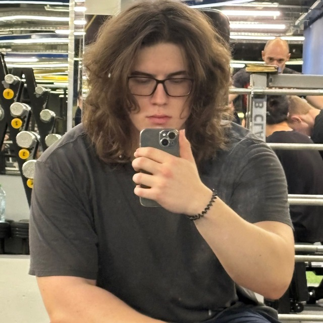
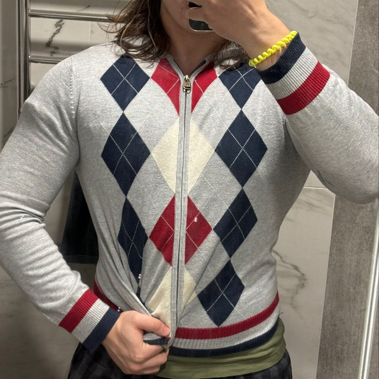
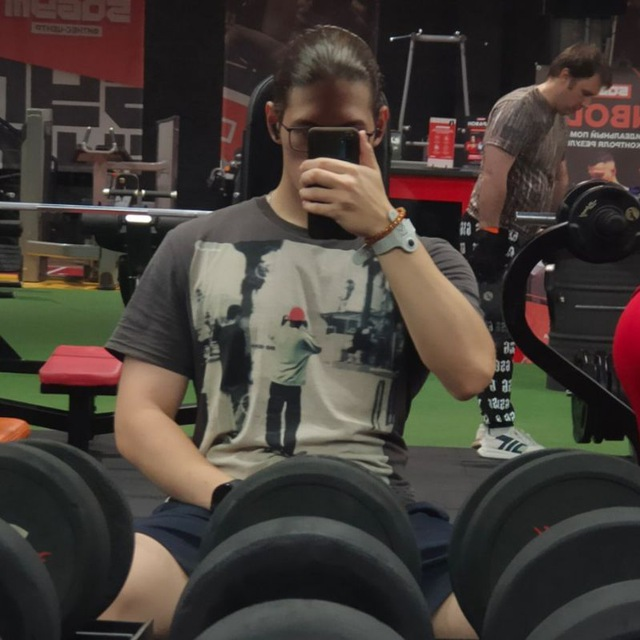

Добро пожаловать
Дорогие друзья, родные и все, кто зашёл на эту страницу — сегодня я открываю свою душу, чтобы жить в гармонии с собой и быть настоящим.
Мой путь
Жизнь преподносит испытания и чудеса. Я прошёл(а) через множество этапов, каждый из которых сделал меня тем, кто я есть сегодня. Теперь я гордо принимаю свою уникальность.



Мое откровение
Я больше не могу прятать свою истинную сущность. Я – гей. Это не просто ярлык, а отражение моего внутреннего мира, моего опыта и мечтаний. Сегодня я открываю свою душу миру.
С любовью в будущее
С этой новой главой моей жизни я смотрю в будущее с надеждой и смелостью. Благодарю всех, кто поддерживал меня и вдохновлял двигаться вперёд.
С теплом и благодарностью, Александр